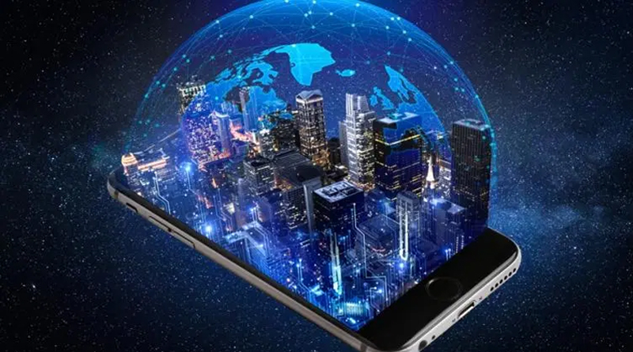

A historia da revolucao digital

A Revolução Digital, também conhecida como a Terceira Revolução Industrial, refere-se aos processos
associados à passagem da evolução tecnológica industrial iniciada entre o começo dos anos 1950 e o final dos
anos 1970, com o desenvolvimento da eletrônica digital, expansão do uso de computadores digitais, além dos
sistemas de automação industrial. Implicitamente, o termo também se refere às mudanças radicais trazidas
pela tecnologia digital aplicada aos sistemas de manufatura, a partir da segunda metade do século XX.
No centro dessa revolução está a produção em massa e o uso concentrado dos circuitos lógicos digitais e
tecnologias derivadas, incluindo o computador e também a automação industrial, que integra os sistemas
eletrônicos e mecânicos para aumentar a produtividade industrial. Tais inovações tecnológicas transformaram
as técnicas tradicionais de produção e de negócios.
Claude Shannon, um matemático da Bell Labs, é tido como o responsável pela criação das bases da teoria da
digitalização, em seu artigo pioneiro em 1948 "A Mathematical Theory of Communication". A revolução digital
converteu toda a tecnologia que era analógica para formato digital. Consequentemente, passou a ser possível
fazer muitas cópias idênticas ao que fosse original.
No final da década de 1960, surgiu a ARPANET, criada pela agência norte americana ARPA, com o intuito de
interligar dados a outros computadores da época, interligando bases militares e universidades que faziam
pesquisa para o governo. Mas a Internet conhecida nos dias de hoje, só teve início no começo de 1990,
através do World Wide Web (Rede de Alcance Mundial) - as iniciais WWW que digitamos para acessar os sites -
criado pela Organização Europeia para a Investigação Nuclear (CERN). Antigamente, era apenas de uso
exclusivo da indústria bélica, utilizada nas buscas de tecnologia de espionagem. A partir daí o que era
de acesso somente de quem tivesse profundo entendimento de computadores, passou a ser alcançado por outras
pessoas que não tinham tanto conhecimento. Assim, a Internet que antes era associada a fanáticos por
computadores e pesquisadores, ficou popularizada entre diversos tipos de pessoas, fazendo parte dos lares e
sendo utilizada por toda a família.
Impactos da revolucao digital

É essencial compreender que a transformação digital tem profundo impacto sobre a sociedade, de maneira
geral. A partir dessa conclusão, se torna mais claro o valor de implementar programas de mudança nas
empresas.
Mas como esse impacto acontece? É simples, pense em como o uso da tecnologia vem transformando as nossas
vidas a cada dia.
As coisas ficaram mais rápidas, o volume de informações é infinitamente maior que antes e não para de
aumentar.
Tudo isso faz com que as pessoas estejam mais distraídas e exigentes do que nunca. Essa é a primeira
mudança: há uma clara alteração de comportamento.
Além disso, a nossa vida ficou bem “mais fácil”, pois serviços e produtos automatizados oferecem uma
comodidade impensada alguns anos atrás.
Pensando do ponto de vista de serviços de utilidade pública, como no caso de hospitais, autoridades
policiais e bombeiros, isso significa mais vidas salvas graças à tecnologia.
Por outro lado, surgem desafios novos como transtornos ligados ao não preparo das empresas em relação às
reclamações de clientes e o ato de digitalizar sem preocupar com a experiência do usuário ao longo do
processo de compra.
Com a evolução da tecnologia, surgem tanto novas soluções quanto problemas que precisam de atenção, o que
obriga as empresas a se adaptar para suprir as demandas da sociedade.
A importancia da transformacao digital para as industria
A transformação digital é algo que tem tomado conta do cenário industrial. Essa é a maior transição social
que existe e que tem o poder de mudar a vida de muitas pessoas e, principalmente, alterar a economia.
Fazer essa transição se tornou uma questão de sobrevivência para as empresas. Isso porque é preciso cada dia
mais entender os clientes, a sua jornada de compra, gerando a eles novas experiências e, por consequência,
levando ao mercado a inovação.
Para se encaixar à indústria do futuro é preciso se adaptar a essas mudanças.
Essa transição está sendo chamada de indústria 4.0 ou, simplesmente, A Quarta Revolução Industrial.
.
Inclusao e exclusao digital

A inclusão digital ainda é um problema no país. Em 2009, existe uma facilidade maior para a compra de
computadores. Desde novembro de 2005, o governo federal pôs em prática um projeto de financiamento de
computadores, que tem como objetivo, incluir o máximo de pessoas na sociedade digital. Mesmo com esta
melhoria, o Brasil ainda é um país de muita miséria. Logo, ainda é um país de muitos excluídos digitalmente,
já que exclusão digital e pobreza estão relacionadas mundialmente.
Com migração das atividades econômicas, governamentais e culturais para a rede, a exclusão digital passa a
impedir a redução da exclusão social. Logo, o excluído que estará fora da rede, ficará de fora, também, dos
principais fluxos de informação. Além disso, essa nova tecnologia tende a ampliar o distanciamento entre o
rico e o pobre.
Outro ponto importante é o mercado de trabalho, que está cada vez mais exigente. Um quesito básico que um
funcionário precisa ter para ser contratado em uma empresa é o conhecimento sobre a rede de computadores, já
que a Internet é um item necessário em um ambiente de trabalho empresarial. Logo, a exclusão digital e o
desemprego possuem uma forte ligação. Para o desenvolvimento de um país, é bastante importante o
investimento em incluir quem está de fora desse novo mundo.
Mas a exclusão digital não está ligada somente a quem não tem acesso à rede de computadores. Mesmo que
usufrui desta tecnologia, não têm o mínimo de conhecimento sobre ela. A maioria dos usuários não sabe dos
riscos que pode correr ao criarem uma conta de e-mail. Um exemplo de risco é a falta de privacidade. Uma
empresa pode possuir total acesso aos e-mails do usuário quando e como quiser. Pensadores que vão mais
afundo na questão da exclusão digital, acreditam que, quem não está informado o suficiente das vantagens e
desvantagens que a rede pode oferecer, conhecendo superficialmente o serviço que está utilizando, pode ser
considerado um excluído da sociedade digital.